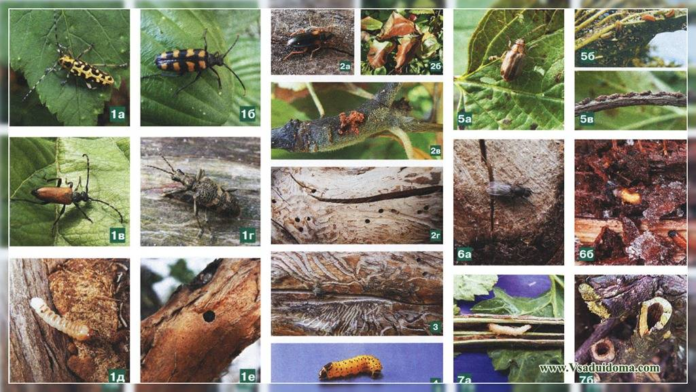

Manejo Integrado de Plagas

Las plagas agrícolas pueden ser controladas eficazmente aplicando la estrategia de manejo integrado, una
alternativa racional para disminuir la dependencia en el uso de insecticidas químicos. Se basa en las
prácticas culturales con orientación al control de plagas, la capacidad que tienen las plantas para tolerar
o rescistir daños por plagas y la acción de los factores naturales de mortalidad de las plagas, como son
parasitoides, depredadores y patógenos. Es la alternativa de control más usada, para substituir el uso
inadecuado de los insecticidas.